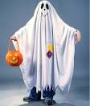
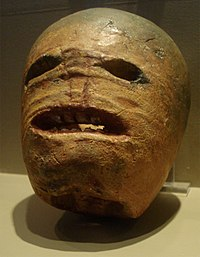
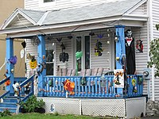

Хеллові́н, або Гелловін — святкується в ніч проти 1 листопада. У ХІХ ст. поширилась думка про язичницькі
корені цього свята, зокрема про походження його від кельтського Саваня, однак останні дослідження
доводять його католицькі корені. Найгучніше відзначається у США, Канаді, Ірландії та Великій Британії.
Уперше назва Хелловіну (Halloween) згадується у 1745 році[10]. Слово походить від англійського Hallowe'en —
скорочення виразу All Hallow's Eve — Вечір усіх святих, яке своєю чергою розшифровується як All Hallowed
Souls Eve — дослівно: Вечір усіх святих душ.[11][12] У рівнинній шотландській, вечір — це even, що
видозмінилося до e'en або een.
Хоча раніше, у давньоанглійській мові трапляється вислів All Hallows (ealra hālgena mæssedæg, день
повернення усіх святих), власне «переддень» All Hallows' Eve згадується лиш у 1556.
Історія
На зламі епох Античності та Середньовіччя 13 травня католицька церква відзначала свято Всіх святих
(православні відзначають це свято в першу неділю після Зіслання Святого Духа). Однак у VIII ст. папа
Григорій ІІІ освятив у Римі каплицю в базиліці св. Петра на честь Всіх Святих саме 1 листопада, і переніс на
день освячення цієї каплиці також святкування цього свята в Римі. У наступному, IX столітті, папа Григорій
IV постановив, що 1-е листопада буде днем Всіх Святих у цілій Церкві. У цій традиції свято потрапило й до
Ірландії, а не навпаки, попри поширену думку, що воно нібито трансформувалося з передхристиянського
язичницького шабашу. А день перед празником, як і перед кожним великим святом, проводилося передпразденство
(вігілія, навечір'я). Звідси назва «All Hallows Even», «Вечір усіх святих», скорочено «Hallowe'en».
Натомість під кінець Х століття, у Франції, під впливом Клюнійського абатства, 2 листопада починають
відзначати День Всіх Померлих вірних. З Франції цей день помину померлих поширився по всьому католицькому
світу[.
Опис кельтського язичницького свята Савань[14], яке іноді вважають прообразом Хелловіну, з'являється в
староірландській літературі починаючи з X століття[15]. Згідно з Оксфордським словником фольклору, Савань
був святом одночасно для всіх народів Британських островів та міцно асоціювався зі смертю та надприродним.
Водночас немає жодних доказів того, що в язичницькі часи свято мало якесь особливе значення, крім
сільськогосподарського та сезонного. Древні кельти, які жили на території сучасної Великої Британії, ділили
рік на дві частини — світлу і темну (літо і зиму). Коли темна частина змінювала світлу (наприкінці жовтня),
у кельтів починалися урочисті святкування[16].
Традиційно вважається, що сприйняття Саваня як темного язичницького свята, пов'язаного з мертвими,
зобов'язане своєю появою християнським ченцям X—XI століть, які писали про нього через приблизно два
сторіччя після затвердження Дня всіх святих та приблизно через чотириста років після прийняття Ірландією
християнства[17]. Водночас, уже в VIII столітті День усіх святих починає поступово заміщати Савань; завдяки
взаємопроникненню гельських традицій та католицьких обрядів, починають формуватися перші зачатки майбутнього
Хелловіну.
Святкування різними народами
Після того, як Хелловін почав активно відзначатися з XIX століття в США і Канаді, він поширився у всьому
світі завдяки впливу американської культури, при цьому існує ряд регіональних відмінностей. Наприклад, в
Ірландії прийнято влаштовувати великомасштабні піротехнічні дійства та багаття, а в Шотландії цей звичай
відсутній[23][24]. За межами країн, де живуть нащадки кельтів, свято носить скоріше комерційний характер,
ніж культурний або ритуальний[25]. В Японії на честь свята проводяться щорічні паради, що іноді досягають
величезної кількості учасників і створюють великі проблеми міським службам[26]. Найвідоміший захід такого
роду проходить в місті Кавасакі, вважається, що воно — найстаріше місце святкування Хелловіну в Японії[27].
У Європі особливо популярні вечірки Хелловіну в стародавніх замках, відомих за переказами про привидів. Німці
влаштовують жахо-карнавал у замку Франкенштайна, що неподалік Дармштадта. За язичницькими віруваннями
західних європейців у ніч Хелловіну відчиняються двері в потойбічний світ, і духи померлих приходять на
землю, щоб знайти собі відповідне тіло. Тому для відкупу від усіляких скелетів, вампірів та привидів, що
можуть постукати у двері, слугує відкуп — насипати торбу гостинців-ласощів.
У США та Великій Британії святкування починають заздалегідь: вечір напередодні Хелловіну, 30 жовтня,
називають Ніч пустощів (Mischief Night). У цей вечір діти й підлітки мають право розіграти своїх знайомих і
сусідів. Типові пустощі включають намазування вікон автомобілів милом, закидання будинків яйцями і гнилою
городиною. Діти можуть обмотувати дерева туалетним папером або дзвонити в двері, а тоді тікати. Нерідко такі
жарти межують з вандалізмом, тому часто крамниці не продають дітям яйця в період святкування Хелловіну.
Символи
Більшість символів свята мають довгу історію. Наприклад, традиція виготовлення гарбузів-світильників пішла
від кельтського звичаю створювати ліхтарі, які допомагають душам знайти шлях у чистилище[28]. У Шотландії
символом Хелловіну виступала ріпа[29][30], але в Північній Америці її швидко замінив гарбуз, як дешевший та
доступніший овоч[29]. Вперше створення гарбузів-світильників в Америці було зафіксовано в 1837[31]; цей
ритуал, що проводився під час збору врожаю, не мав ніякого стосунку до Хелловіну аж до другої половини XIX
століття[32].
Популярними є костюми персонажів класичних фільмів жахів, наприклад, Мумії та чудовиська Франкентштейна. У
святковому оздобленні будинків велику роль відіграють символи осені, наприклад, сільські лякала[28].
Основними темами Хелловіну є смерть, зло, окультизм та монстри. Традиційними кольорами є чорний та
помаранчевий[33].

Світильник Джека
Головним символом свята є так званий Ліхтар Джека (англ. Jack-o'-lantern — Джек-Ліхтар). Він являє собою гарбуз,
на якому вирізано зловісно усміхнене обличчя; всередину гарбуза кладуть запалену свічку. Вперше «світильники
Джека» з'явилися у Великій Британії, але спочатку для їх виготовлення використовували брукву або ріпу[29].
Вважалося, що подібний плід, залишений в День всіх святих біля будинку, буде відганяти від нього злих духів[34].
Коли традиція святкування Хелловіну поширилася в США, світильники стали робитися з гарбузів, більш доступних та
дешевих[29].
Витоки цього звичаю можна знайти в стародавніх ірландських та британських традиціях вирізання на овочах елементів
обличчя під час проведення різних ритуалів[35]. Сучасний вигляд «світильник Джека» отримав приблизно в 1837,
тоді ж він і отримав цю назву[36]. В 1866 він уже міцно асоціювався з Хелловіном[37]. Втім, у США різьблений
гарбуз ще задовго до популяризації Хелловіну використовувався як один із символів збору врожаю[38]. В 1900 його
використання під час цього свята поступово увійшло в побут.

Музика
Як і інші свята, Хелловін має свої відомі пісні та тематичну музику. Широко відома пісня «Monster Mash»
поп-музиканта Боббі Пікетта стала, на думку ряду музичних критиків, своєрідним гімном Хелловіну[39]. Іншою
дуже популярною піснею є композиція «This Is Halloween[en]», написана Денні Ельфманом. Вона увійшла до
саундтреку анімаційного фільму «Жах перед Різдвом» і неодноразово була переспівана різними не лише
американськими, але і японськими виконавцями[40][41][42].
Також часто зі святом асоціюється група «Midnight Syndicate», творчість якої, за словами деяких авторів,
стала синонімом цього свята. Творчість колективу фактично визначила основні риси «музики Хелловіну»,
визначило її стандарти та зробило вплив на інші подібні проекти[43][44][45][46]. 11 вересня 2009 AOL Radio
опублікувало рейтинг «10 найкращих альбомів у жанрі „Хелловін“»; Midnight Syndicate зайняли в ньому одразу
три місця — третє, четверте та восьме[47]. 2010 року група випустила окремий збірник «Halloween Music
Collection[en]».
Часто для лякальних атракціонів під час святкування Хелловіну використовують атмосферні композиції в жанрі
ембієнт, що складаються з лякальних елементів на зразок скрипів, виття вовків і тому подібного.
Найпопулярніша в цьому плані музика тієї ж групи «Midnight Syndicate», яка задає стандарти для цієї
індустрії[43][48]. Відома група «Nox Arcana», чий альбом «Grimm Tales» став джерелом натхнення для створення
парку «Scary Tales: Once Upon A Nightmare» на студії «Universal Studios Halloween Horror
Nights»[49][50][51]. На вечірках використовується танцювальна музика, написана в жартівливо-лякаючому стилі,
або композиції з саундтреків до фільмів жахів[52]. Відомою композицією стала пісня «Let's Get Tricky» котра
була виконана Белою Торн і Рошоном Феганом. Вона звучала у відомому ТВ-серіалі на каналі Дісней —
«Танцювальній лихоманці».
Традиції
Костюми
Одягання в карнавальні костюми — порівняно недавній елемент свята. Вперше як повноцінний звичай воно
зафіксовано на початку XX століття та сходить до американських традицій костюмованих вечірок[53]. Вперше
носіння маскарадних костюмів на Хелловін зареєстровано в 1895 в Шотландії[54], коли діти в масках ходили по
домівках та отримували цукерки, тістечка, фрукти та гроші[54]. Немає жодної згадки про подібні традиції в
США, Ірландії або Англії до 1900 року[55]. В Шотландії дітей, які, одягнувшись у карнавальні костюми,
зображують різних монстрів або інших персонажів, ходять від будинку до будинку та випрошують солодощі,
називають guisers, а сам звичай —Guising («гайзінг», від англ. guise — носіння маски, наряду, жартівливе
перевдягання)[56][57]. Костюми для Хелловіну, зазвичай, починають продавати ще в серпні[58].
Самі костюми на Хелловін значно еволюціювали за минуле століття. Спочатку костюми були образами потворних
схудлих людей. Це виглядало далеко не святково та достатньо лякаюче. Але вже до початку 2000 костюми все
більше набували яскраві образи і саме свято перетворювалося на шоу[59].
Дослідження, проведене Інститутом роздрібної торгівлі США, показало, що 2005 року 53,3 % американців
планували купити маскарадний костюм на Хелловін і мали намір витратити на це в середньому 38 доларів 11
центів. Загальні доходи від продажу костюмів склали $3,3 млн в 2005 і $4,96 млн — в 2006[60]. В 2009, під
час економічної кризи, середня сума витрат на придбання хелловінської атрибутики громадянами США зменшилася
на 15 % у порівнянні з 2008 роком та склала 56 доларів 31 цент[61].
Основна тема костюмів на Хелловін — це різна нечисть або надприродні персонажі, проте популярні й костюми на
абсолютно довільну тематику, хоча основний мотив продовжує залишатися найпоширенішим[62]. Так, в 2000-х
серед костюмів на Хелловін можна було зустріти не лише костюми вампірів, перевертнів або відьом, а й фей,
королев, діячів поп-культури та навіть рольові костюми сексуальної тематики[63].
Традиція вбиратися в костюми та ходити від хати до хати, випрошуючи солодощі, з'явилася ще в Середньовіччі та
спочатку була пов'язана з Різдвом. В Англії та Ірландії бідняки здавна ходили по домівках та випрошували так
звані «духовні тістечка» в День всіх святих (1 листопада), обіцяючи в обмін молитися за душі померлих
родичів господарів. Хоча цей звичай вважається споконвічно британським[64], дослідники також знаходили
згадки про нього на півдні Італії[65]. Один з персонажів комедії Вільяма Шекспіра «Два веронці» вимовляє
фразу «Ти скиглиш, як жебрак на День всіх святих», що свідчить про значне поширення цього звичаю вже
наприкінці XVI століття[66].
Термін Trick-or-treat вперше став використовуватися в США[67], вперше його використання зафіксовано 1934
року[68], а активно поширюватися він став лише з 1939 року[69]. Літературно його можна перекласти як жарт
або частування (поширені варіанти — частування чи капость, цукерки або смерть та ін.), що вказує на
жартівливу загрозу нанести шкоду, якщо господар не принесе дітям частування. Але усталеного перекладу
терміну в українській мові немає та зазвичай він надається в оригіналі, або з заміною на фразу гаманець або
життя. Хоча термін спочатку згадувався лише на заході Північної Америки, до 1940-років відзначено вже широке
поширення по всій країні[70]. В нинішні часи фраза носить виразно жартівливий відтінок і її часто
використовують за межами США, наприклад, в Ірландії[67] та Японії[71], не боячись отримати звинувачення в
здирництві.
Ігри та інші традиції
Окрім випрошування солодощів та носіння різноманітних костюмів, святкування Хелловіну також пов'язано з
деякими специфічними іграми та ворожіннями. Наприклад, можна зустріти згадки про ворожіння за допомогою
шкірки: шотландські дівчата зрізали шкірку з яблук, намагаючись зробити її якомога довшою, і кидали через
плече. Вважалося, що впала шкірка набувала вигляду першої літери прізвища судженого[20]. Інший звичай
ґрунтувався на відомому повір'ї про Криваву Мері, який в наші дні перетворився в популярну міську легенду.
Це ворожіння полягало в тому, що молоді дівчата мали в темному домі піднятися по сходах спиною вперед та
провести свічкою перед дзеркалом. Після цього в дзеркалі нібито мало показатися обличчя майбутнього
чоловіка, але дівчина могла побачити в дзеркалі й череп — це означало, що вона помре, так і не вийшовши
заміж[72][73][74].

Атракціони
Важливою традицією святкування Хелловіну є організація так званих Haunted attractions (укр. Атракціони,
населені примарами), головна мета яких — приємно налякати відвідувачів[75]. Найстаршим подібним атракціоном
вважається «Населений примарами будинок Ортона та Спунера», відкритий 1915 року[76]. У більшості випадків
цей бізнес має чіткі сезонні рамки. Від звичайних «будинків з привидами» ці атракціони відрізняються
використанням стогів сіна ікукурудзяних
лабіринтів в символіці[77]. Подібні заходи приносять США приблизно
300—500 мільйонів доларів на рік і залучали до 400 000 клієнтів під час піку цієї індустрії 2005 року[75].
Технічний рівень подібних проектів постійно зростає, аж до голлівудського рівня[78].
У США до цих атракціонів пред'являється ряд вимог. Крім стандартного дотримання правил безпеки, вони повинні
бути обладнані знаками, що попереджають про густий туман, гучні звуки тощо. Зазвичай відвідування цих
атракціонів заборонено для вагітних жінок та людей зі слабким серцем. Відповідно до закону, перед відкриттям
атракціон повинен отримати спеціальний дозвіл перевірників[79].
Корпорація Дісней щорічно відзначає Хелловін у всіх своїх тематичних парках. В атракціоні Примарний маєток
(тільки Каліфорнія та Токіо) міняють все досконально і за основу свята в Переддень Дня всіх святих царює
обстановка «Жаху перед Різдвом» Тіма Бертона, де головним персонажем мультфільму є Джек Скеллінгтон.
Святковий стіл
Через те, що у Північній півкулі Хелловін припадає на пору осіннього врожаю яблук, одне з чільних місць на
святковому столі посідають яблука, які вкривають поливкою, цукрують[en], карамелізують[en] або викачуюють у
цукровому сиропі та горіхах. Спочатку існувала традиція роздавати дітям яблука-цукерки, але вона швидко
зійшла нанівець через міську легенду, яка свідчила, що в подібні цукерки злі люди кладуть шпильки та
голки[80]. Хоча подібні випадки були зареєстровані кілька разів, вони ніколи не призводили до серйозних
травм[81]. Багато батьків були впевнені, що ці випадки були спровоковані ЗМІ, які зрощували істерію на тлі
неправдивих чуток[82].
У свою чергу, в Північній Америці популярні кенді корни та кенді пампкіни, цукерки у вигляді кукурудзи та
гарбуза відповідно. Кенді корн являє собою цукерки з цукру, кукурудзяного сиропу, штучних барвників та
сполучних речовин[83]. Рецепт та спосіб їхнього приготування практично не змінився, виробництво кенді корнів
досі базується на ручній роботі[84]. Незважаючи на свою назву, кенді пампкін являє собою лише варіацію кенді
корну[85]. Головна відмінність «гарбузів» від «кукурудзи» це використання меду, більш рясне додавання зефіру
і, нарешті, часто використовуваний особливий нежирний крем[86][87].
Донині, у сучасній Ірландії до свята випікають (або тепер, купують) Бармбрек (ірл. гел. báirín breac), легкий
плодовий пиріг, у який закладають горох, дерев'яну тріску, шматок тканини, монету та кільце. Предмет, що
попався їдцю пророкував майбутнє: горох — не чекати швидкого весілля, тріска — неприємності в сімейному
житті, шматок тканини — бідність, монета — багатство, кільце — швидке весілля. Відповідно до цієї традиції
зараз продаються бармбреки з іграшковими кільцями всередині[88]. Ця традиція є подібною до звичаю готування
Торту (Трьох) Королів під час Богоявлення, найпоширенішої у романських країнах.
Представники різних християнських конфесій по-різному ставляться до святкування Хелловіну. Деякі
парафії англіканської церкви підтримують свято, вважаючи його проведення частиною християнських
традицій Дня всіх Святих[90][91]
Найчастіше християни не сприймають свято нейтрально через зображенням під час нього магії й
демонізму. Римо-Католицька Церква не вважає свято релігійним і не визнає його стосунок до
християнства[92], у зв'язку з чим забороняє відзначати його в будь-яких церковно-парафіяльних
школах[93].
Водночас деякі християни критикують та відкидають святкування Хелловіну, вважаючи, що його традиції
сягають до язичництва та деяких напрямків окультизму, що суперечить християнським ідеалам[94].
Окремі фундаменталістські та консервативні євангелічні церкви приурочують до дня Хелловіну випуск
брошур, що описують муки грішників у пеклі[95], і протестують проти проведення свята, мотивуючи це
тим, що воно розвинулося з язичницького дня мертвих[96]. Соціолог Джеффрі Віктор та культуролог Джек
Сантіно стверджують, що в США напередодні Хелловіну зростає кількість «сенсаційних» газетних
публікацій і в цілому посилюється «сатанинська паніка»[97][98].
Неоязичництво
Прихильники Вікки ототожнюють Хелловін з Саванем та відзначають його як священний день року[100].
Серед вікан Савань та Хелловін вважаються одним святом, вони називають його «sow-en». Цей підхід
базується на культі «бога Саваня» (або «Самайна»), якого віккани, слідом за рядом фольклористів XIX
століття, вважали кельтським богом Смерті. Одночасно з цим деякі християнські фундаменталісти
вважали слово «Савань» похідним від імені Сатани. Обидві ці точки зору сучасним науковим
співтовариством спростовуються, оскільки насправді слово «Савань» дослівно перекладається зі
староірландської як «листопад», і те ж саме значення слова збереглося в сучасній мові[101].
Реконструктори життя кельтських народів роблять в цей день підношення богам та своїм предкам[100].
Хелловін у популярній культурі
У кінематографі стало традицією випускати з нагоди Хелловіну спеціальні епізоди серіалів, які часто
присвячені самому святу чи які виконані на тему жахів[102]. З хелловінських епізодів широко відомі
«Treehouse of Horror» (укр. «Будинок жахів») — епізоди американського мультсеріалу «Сімпсони», які,
виходячи під час свята, бувши виконані в традиційній для фільмів жахів манері[103]. Кожний такий
епізод складається з трьох мініісторій, що пародіюють різноманітні міські легенди, відомі фільми
жахів або просто об'єкти поп-культури. Вважається, що подібні епізоди є найбільш рейтинговими в
кожному сезоні[104], наприклад, 1996 року п'ятий випуск цього циклу отримав головну нагороду
Інтернаціонально анімаційного фестивалю в Оттаві[105]. В багатокористувацьких відеоіграх проводяться
тематичні хелловінські заходи, коли ігрові локації та персонажі змінюють вигляд на пов'язаний з
фільмами жахів або традицій Хелловіну[106].
У декораціях свята проходить дія культового фільму режисера Джона Карпентера «Хелловін», однією з
найбільш значущих картин в жанрі слешер. Історія маніяка Майкла Майєрса пізніше була продовжена, і
до 2009 року в рамках франшизи зняли ще дев'ять фільмів. Оригінальні творчі знахідки Карпентера
справили величезний вплив на розвиток жанру, а також принесли Карпентеру славу одного з найкращих
режисерів фільмів жахів[107]. Майкл Майєрс став культовим та відомим персонажем, що вплинув на
багатьох наступних кіноманіяків[108][109].
Одним з родоначальників спід-металу та павер-металу вважається німецький гурт «Helloween». Засновник
гурту Кай Гансен вибрав їй цю назву саме в честь свята та зробив ліхтар Джека талісманом гурту.
Назва гурту пишеться через e, а не a, щоб зробити відсилання до пекла (англ. hell)[110]. Назву
«Trick or Treat» носить італійський пародійний павер-метал-гурт з Модени, пісні якого присвячені
дитинству та супутній тематиці, на кшталт олов'яних солдатиків та діснеївських персонажів.
Хелловіну присвячено твір відомого письменника Роджера Желязни «Ніч у самотньому жовтні». У книзі
розповідається про Велику Гру, яка проходить у жовтні раз на кілька десятиліть, щоразу в новому
місці. В ніч на Хелловін, коли межа між світами слабшає, можуть бути відкриті ворота між нашим
світом та світом в якому живуть Древні боги. Відкриття брами між світами, або утримання її в
замкненому стані є перемогою і фіналом Гри.
Хелловін, його історію і дух цього свята в американському містечку описав Рей Бредбері у повісті
«Переддень всіх святих».